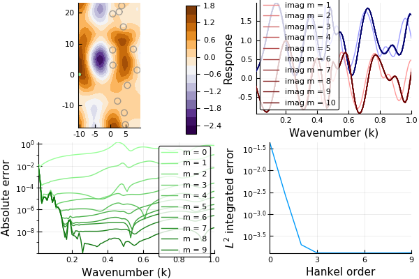

Convergence when increasing the number of Hankel functions
The code convergence.jl tests how fast does the scattered wave (in frequency) converge when increasing the number of Hankel functions. To describe the scattered wave from each particle we use a series of Hankel functions (of the first kind).
include("convergence.jl")
simulations = hankel_order_convergence()
plot_hankel_order_convergence(simulations)

In the figures above m is the maximum order of the Hankel functions. The top left figure shows the configuration of particles considered.